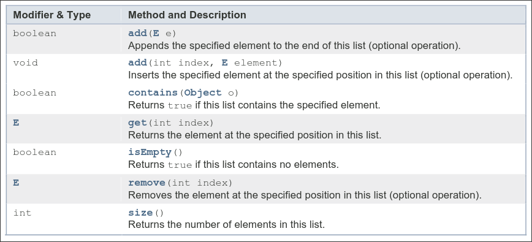

Examen 2021 — Parcial 2
Problema 1
Se quiere desarrollar una clase monitora TorreControl para gestionar una !nica pista de aterrizaje de un aeropuerto, con acceso exclusivo por parte de objetos de la clase Avion, que ser"n las hebras. Los aviones pueden pedir a la torre de control aterrizar y despegar. Se pide desarrollar los siguientes m#todos:

-
(a) (1,5 puntos) public … void avisoAterrizaje(Avion unAvion): para la maniobra de aterrizaje, los aviones primero avisar"n a la torre de control (con este m#todo) de su intenci\(n de aterrizar y despu#s preguntar"n por el permiso para poder aterrizar. Cuando la torre de control reciba un aviso de aterrizaje deber" a%adir el avi\)n que solicit$ el permiso a una lista. Esta lista se ordenar" por el combustible que tengan los aviones, siendo el que tenga menos combustible el primero de la lista y el primero en aterrizar (en caso de haber dos aviones con el mismo combustible ser" indiferente el orden de aterrizaje entre ellos).
-
(b) (2 puntos) public … void permisoAterrizaje(Avion unAvion): un avi\(n invoca este m#todo para pedir permiso para aterrizar. Cuando la torre de control reciba la llamada de permiso de aterrizaje entonces solo dejar" aterrizar al avi\)n si lo tiene guardado en la lista de menos combustible y si la pista est" libre.
-
(c) (1,5 puntos) public … void permisoDespegue(Avion unAvion para la maniobra de despegue los aviones pedir"n permiso para despegar. Se supone que todos los aviones tienen el m"ximo de combustible y no hay prioridad, as& que cuando pidan despegar podr"n hacerlo siempre y cuando la pista est# libre.
Aclaraciones sobre el ejercicio:
- En la clase TorreControl se controla cuándo la pista está ocupada o libre. La pista estará ocupada cuando un avión ha recibido permiso a través de los métodos permisoAterrizaje o permisoDespegue. La pista se debe marcar como ocupada dentro de este método cuando un avión tiene permiso y se mantiene así en un tiempo, representado como Thread.sleep(random.nextInt(5000)). Al expirar este temporizador, la pista se marcará como libre.
- Para simplificar este ejercicio, se supone que un avión mantiene constante su nivel de combustible, desde que notifica su intención de aterrizar (con el método avisoAterrizaje) hasta que recibe el permiso (con el método permisoAterrizaje).
- Se dispone un método (no es necesario implementarlo) que recibe una lista de aviones y retorna una lista de aviones ordenada de menor a mayor por el combustible del avión: List<Avion> ordenarAvionesPorCompustible(List<Avion> listaAviones))
// Ejemplo del posible código de una hebra de la clase Avion
public class Avion extends Thread {
private TorreControl miTorre;
private int combustible;
private String matricula;
public Avion(TorreControl miTorre, String matricula, int combustible) {
this.miTorre = miTorre;
this.matricula = matricula;
this.combustible = combustible;
}
public int getCombustible() {
return this.combustible;
}
public String getMatricula() {
return this.matricula;
}
@Override
public void run() {
while (true) {
try {
this.miTorre.avisoAterrizaje(this);
this.miTorre.permisoAterrizaje(this);
this.miTorre.permisoDespegue(this);
} catch (InterruptedException ignored) {
}
}
}
}
public static void main(String[] args) throws Exception {
TorreControl tc = new TorreControl("Barajas");
new Avion(tc, "aaa", 30).start();
new Avion(tc, "bbb", 10).start();
new Avion(tc, "ccc", 20).start();
new Avion(tc, "ddd", 50).start();
new Avion(tc, "eee", 5).start();
}
Mostrar solución
import java.util.*;
public class TorreControl {
private String nombre;
private List<Avion> listaAterrizaje = new ArrayList<Avion>();
private volatile boolean pistaOcupada = false;
private Random random = new Random();
public TorreControl(String nombre) {
this.nombre = nombre;
}
public synchronized void avisoAterrizaje(Avion miAvion) {
listaAterrizaje.add(miAvion);
// Se ha elegido esta forma de ordenación pero puede hacerse de varias formas.
Collections.sort(this.listaAterrizaje, new OrdenarPorCombustible());
System.out.println(
"Torre control - Añadido avión a la lista ordenada. "
+ this.listaAterrizaje.toString()
);
}
public synchronized void permisoAterrizaje(Avion miAvion) {
try {
System.out.println(
"Torre control - Primer avión en lista: "
+ this.listaAterrizaje.get(0).toString()
);
while ((this.pistaOcupada == true) ||
(listaAterrizaje.get(0) != miAvion)) {
wait();
}
this.pistaOcupada = true;
System.out.println(
"Torre control - "
+ miAvion.toString()
+ " Aterrizando (región crítica)."
);
// Duerme entre 0 y 5 seg. para simular el uso de la pista
Thread.sleep(random.nextInt(10000));
this.pistaOcupada = false;
listaAterrizaje.remove(0);
notifyAll();
} catch (InterruptedException ignored) {
}
}
public synchronized void permisoDespegue(Avion miAvion) {
try {
while (this.pistaOcupada == true) {
wait();
}
this.pistaOcupada = true;
System.out.println(
"Torre control - "
+ miAvion.toString()
+ " Despegando (región crítica)."
);
// Duerme entre 0 y 5 seg. para simular el uso de la pista
Thread.sleep(random.nextInt(10000));
this.pistaOcupada = false;
notifyAll();
} catch (InterruptedException ignored) {
}
}
}
Problema 2
Se desea implementar un sistema que simule un conjunto de jugadores de un equipo de f!tbol americano, que est"n sedientos, y una persona que actuar" como aguador. Cada jugador se encargar" peri$dicamente de extraer un vaso de una lista de vasos compartida, y de llenarlo de agua de una botella tambi#n compartida. El aguador comprobar" continuamente que haya disponibles vasos y agua en la botella, rellenando ambos en caso contrario. Tanto los jugadores como el aguador tienen que poder trabajar de forma concurrente.
Se incluye la implementaci$n de las clases necesarias, adem"s del m#todo ExtraordinarioP2.main, que permite probar el programa con 20 jugadores y un aguador.
import java.util.List;
import java.util.ArrayList;
public class ExtraordinarioP2 {
public static void main(String[] args) {
Botella botella = new Botella();
botella.litros = 100;
List<Vaso> vasos = new ArrayList<Vaso>();
Aguador aguador = new Aguador(botella, vasos);
aguador.start();
for (int i = 0; i < 20; i++) {
Jugador jugador = new Jugador(botella, vasos);
jugador.start();
}
}
}
public class Vaso {
Integer capacidad;
public Vaso(int capacidad) {
this.capacidad = capacidad;
}
}
public class Botella {
Integer litros;
}
import java.util.List;
class Aguador extends Thread {
private Botella botella;
private List<Vaso> vasos;
public Aguador(Botella botella, List<Vaso> vasos) {
this.botella = botella;
this.vasos = vasos;
}
/*
* El aguador rellena la botella de agua, y pone vasos nuevos.
*/
public void run() {
while (true) {
synchronized (this.botella) {
if (this.botella.litros < 1) {
System.out.println("Aguador rellena botella");
this.botella.litros = 10;
}
}
synchronized (this.vasos) {
if (this.vasos.size() < 1) {
for (int i = 0; i < 10; i++) {
this.vasos.add(new Vaso(1));
}
System.out.println("Aguador añade vaso");
}
}
}
}
}
import java.util.List;
class Jugador extends Thread {
private Botella botella;
private List<Vaso> vasos;
public Jugador(Botella botella, List<Vaso> vasos) {
this.botella = botella;
this.vasos = vasos;
}
/*
* Cada jugador extrae un vaso, lo llena de agua y bebe.
*/
public void run() {
Vaso vaso = null;
while (true) {
try {
System.out.println("Jugador intenta beber");
synchronized (this.vasos) {
if (this.vasos.size() < 1) {
continue;
}
if (vaso == null) {
vaso = this.vasos.remove(0);
System.out.println("Jugador ha cogido vaso");
}
}
synchronized (this.botella) {
if (this.botella.litros < vaso.capacidad) {
continue;
}
Thread.sleep(500);
this.botella.litros -= vaso.capacidad;
System.out.println("Jugador ha bebido");
}
// Tira el vaso
vaso = null;
Thread.sleep(6000);
} catch (InterruptedException ignored) {
}
}
}
}
Nota: Se recuerda que un bloque synchronized se asocia al objeto en el parámetro. Se garantiza exclusión mutua entre los bloques sincronizados que se invocan con el mismo objeto.
- (a) (2 puntos) 'Existe alg!n problema de acceso concurrente en esta implementaci$n?. Si es as&, 'de qu# tipo es?. Justifique su respuesta.
Mostrar solución
Sí existe. Hay bloqueo exclusivo de los recursos, con espera, y en orden inverso: Aguador bloquea botella y luego vasos, mientras que Jugador bloquea los vasos primero.
- (b) (1 punto) 'C$mo solucionar&a el problema?
Mostrar solución
La solución más sencilla es invertir el orden del bloqueo en Aguador o en Jugador. Analizando el código vemos que no se necesita bloquear sobre ambos recursos a la vez, así que una mejor solución sería separar las dos regiones críticas: primero bloquear vasos, acabar el bloque, y luego bloquear la botella (o viceversa).
- (c) (1 punto) Los vasos tienen una capacidad de 1 litro. Sin modificar la implementaci$n de Jugador, 'cu"l es el n!mero m"ximo de jugadores que podr&an beber por minuto?
Mostrar solución
Nos piden el máximo, con lo que usaremos el caso mejor. Para que un jugador pueda beber, tiene que haber bloqueado los vasos (500ms de espera) y luego la botella (1000ms). Ese es el mínimo tiempo necesario por jugador, y durante el cual los recursos están bloqueados. El tiempo de espera tras beber no afecta, porque se puede aumentar el número de jugadores.
Por tanto, el número máximo de jugadores sería 60s/ (1.5s/1 jugador) = 40 jugadores.
Para este máximo, hemos supuesto que el tiempo de procesamiento (bloqueo) por el aguador, el de las operaciones básicas y el consumido por los cambios de contexto son despreciables.
Se podría aumentar el número de jugadores por minuto separando los dos bloques synchronized (ver respuesta anterior), de forma que el tiempo de espera se reparta entre los dos elementos. De esa forma, el primer jugador tardaría 1.5s en beber, pero los siguientes podrían tardar sólo 1s (la espera sobre los vasos puede darse a la vez que la espera sobre la botella). En ese caso, en el primer minuto podría haber 59 jugadores, y 60 en los siguientes.
Si se considera que NO se puede aumentar el número de jugadores en ExtraordinarioP2, el número máximo sería 20 (es el número de jugadores que añadimos), que podrían llegar a beber 2 veces en ese minuto (20 jugadores tardan 30 segundos en completar, que es menor que el tiempo de espera post-bebida).
- (d) (1 punto) Si se desease sustituir los bloques sincronizados por m#todos sincronizados, 'en qu# clase o clases los implementar&a?
Mostrar solución
Los métodos sincronizados aplican un bloqueo sobre el objeto al que pertenecen. Por tanto, estos métodos deben estar definidos sobre un objeto común a todas las hebras. Esto descarta Jugador y Aguador. En este caso, el único objeto compartido es Botella. Para bloquear sobre la lista de vasos, habría que crear una clase que represente la lista.